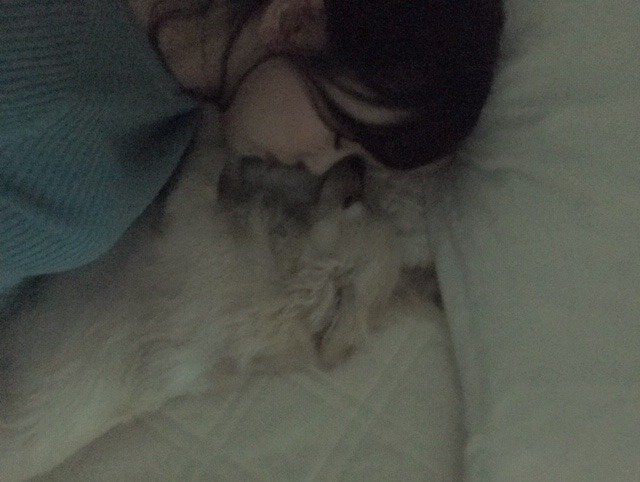

2019/0602Sun私は紅茶だけど
もう6月ですか！
そうですか！
今月の28日にはいよいよホットギミック ガールミーツボーイが公開されるのだと思うと嬉しさと緊張でどうにかなりそうです
が、
早く観ていただきたい気持ちでいっぱいです。
たくさんの方に届いたらいいな...
最近は映画の宣伝や、撮影、収録など忙しくさせていただけていて、充実した毎日です☺︎
たくさんお知らせしたいことがあるので。 わくわくしてます
個人でのお仕事はもちろんですが、乃木坂としていられる今この時間を1番大切にしたいなぁと改めて思うし
きっと私は忙しいのが好きな人間なんだなーと思います
挑戦してみたい事がまだまだたくさんあって
だからこそ毎日を大切に正直に素直に自由に
私らしく生きていきたいと思っています
あ、でも体調には気をつけないとね。
もう半袖短パンで寝てるし、、

ソファと同じ幅のプティ
そんな日々の反動？なのか、私の根っからのマイペースな性格からなのか分かりませんがお休みの日はずっとずっと寝ていることが増えました。
ナマケモノなのかな？
5度寝くらいしてます。約16時間くらい。
なにもしない時間も最近は好きで家に一日中いることも多くなりました。アクティブ派だったんだけどな〜
部屋で音楽を歌詞を見ながら聴いてて
久しぶりに聴き返していいなぁと思う曲も多くて、よく思い出しては聴いたりしてます
RIPSLYMEさんは私が中学生の頃よく聴いてて懐かしくなりました
ちょうど良いゆるさで、ドライブしながら聴きたい曲ばかり。いい曲多いんですよ〜
おすすめは、
黄昏サラウンド
hot chocolate
tales←めちゃくちゃ良い
流れの中で
one
残念ボーイ
dandelion
です
あとは、YUKIさん、THEVAMPSさん、チャットモンチーさん、YUIさん、back numberさん、あいみょんさん、suchmosさん、aikoさん、aimerさんを聴いて
久石譲さんサントラを流しながらお風呂に入って
気づいたら1日が終わってますね
サザンオールスターズさんもいいですよね〜
冷たい夏、栞のテーマ！
あとはいつかフェスみたいなものにも行ってみたくてバンド系も調べてちょくちょく聴いてます
今度おすすめのよく聴く曲ブログに書こうかな？
そう考えると
kpopもUKロックバンドもLAラッパーも色々聴いてるなぁ 何事も飛び込む勇気なんですよ
これ！って決めちゃうとつまんない
つまんない人生は嫌です

あ、今ね、
座り心地のいいクッションと着心地のいい部屋着が欲しいんです
座り心地のいいクッションと着心地のいい部屋着が欲しいんです
オーストラリアのサンタさん来てくれないかな〜
ごろごろする気満々ですo(^-^)o
そんな中アクティブだった日といえば
この間レコメン前にHKT48の田島芽瑠ちゃんと久しぶりに夢の国へ行ってきました〜☺︎
めると遊ぶの久しぶりで、ずっと誘ってくれていてやっと予定が合いました！

楽しかったです♡
なんだかんだ5年くらいの仲なのかな？
これからもよろしくね〜
カチューシャ途中でキラキラスパンコールに変えました。笑 カチューシャかわいいよね(*･ω･)ノ
めるのインスタやツイッターにも写真載ってるみたいなので是非！
これからもよろしくね〜
カチューシャ途中でキラキラスパンコールに変えました。笑 カチューシャかわいいよね(*･ω･)ノ
めるのインスタやツイッターにも写真載ってるみたいなので是非！

乃木坂に入って、すてきな友達が増えて
気づいたら人の事が前より好きになっていました
周りの人達に恵まれています
日々感謝しなきゃ☺︎
では！
「BOMB」与田ちゃん梅ちゃんと表紙
「FINEBOYS」
「東海ウォーカー」
「TVガイドAlpha EPISODE U」
「装苑」
「少年サンデー」表紙
「別冊spoon.」表紙
「シネマスクエア」
「Seventeen」
「日経エンタテインメント！」
発売中です
では！
2019/06/02 22:05
コメント(358)
LAラッパー...｡
(更新)ありがとうございます。
(更新)ありがとうございます。
バンドはMrs. GREEN APPLEがおすすめです！元気がでて勇気づけてくれて時には一緒に切なくなってくれる曲ばかりです、ぜひ聴いてみてほしいです！！
みおな
寝れる時はしっかり寝たほうがいいよね。
疲れ溜まっちゃうもんね。
寝れる時はしっかり寝たほうがいいよね。
疲れ溜まっちゃうもんね。
堀ちゃん！更新ありがとう！
もう6月ですね～
2019年もう半分終わりそう
なんやね～！
そう考えるとあっという間ですね！
そうですな！
もう今月に迫ってきたね～
ホットギミック！！
楽しみにしてますよ！
そうそう！
半袖で寝がちなんだけど、
ちょっとまだ寒いかな～って
感じだから体調にはお気をつけて！
めっちゃ堀ちゃん寝るね～！
5度寝は自分、ないかも…笑
寝るのは大事よね！
うわぁ～名曲尽くしですな！
サザンは「希望の轍」がいいよ！！
ぜひ聴いて見てね！
あらっ、夢の国行ったんだね～！
レコメン前…だからちょっとだけ本番
テンション高めだったのかな？
気のせいかな？笑
カチューシャも似合ってるよ～！！
写真もいっぱいあげてくれて
ありがとう！次回もたくさんあげてね～
次回の更新も待ってるよ～！
それでは！
もう6月ですね～
2019年もう半分終わりそう
なんやね～！
そう考えるとあっという間ですね！
そうですな！
もう今月に迫ってきたね～
ホットギミック！！
楽しみにしてますよ！
そうそう！
半袖で寝がちなんだけど、
ちょっとまだ寒いかな～って
感じだから体調にはお気をつけて！
めっちゃ堀ちゃん寝るね～！
5度寝は自分、ないかも…笑
寝るのは大事よね！
うわぁ～名曲尽くしですな！
サザンは「希望の轍」がいいよ！！
ぜひ聴いて見てね！
あらっ、夢の国行ったんだね～！
レコメン前…だからちょっとだけ本番
テンション高めだったのかな？
気のせいかな？笑
カチューシャも似合ってるよ～！！
写真もいっぱいあげてくれて
ありがとう！次回もたくさんあげてね～
次回の更新も待ってるよ～！
それでは！
映画見に行くよ～
ホットギミックだんだんと公開近づいてきましたね
楽しみです
お知らせは何かな？
こちらも楽しみです
充実してるけどきっと疲れもあるんですね
休める時にはしっかり休んでね
楽しみです
お知らせは何かな？
こちらも楽しみです
充実してるけどきっと疲れもあるんですね
休める時にはしっかり休んでね
未央奈ちゃん更新ありがとー！
映画公開に先駆けいろいろと忙しいみたいですね(>_<)
その分いろんなところで未央奈ちゃんが見れるのは嬉しい！
でもあまり無理はしないでね。
映画楽しみだなー！
自分も最近聴いてる曲がたくさんある！
ほぼ乃木坂なんだけどね。笑
未央奈ちゃんのおすすめも聴いてみるね！
ではでは
今日も素敵な１日を。
映画公開に先駆けいろいろと忙しいみたいですね(>_<)
その分いろんなところで未央奈ちゃんが見れるのは嬉しい！
でもあまり無理はしないでね。
映画楽しみだなー！
自分も最近聴いてる曲がたくさんある！
ほぼ乃木坂なんだけどね。笑
未央奈ちゃんのおすすめも聴いてみるね！
ではでは
今日も素敵な１日を。
堀ちゃん、ブログ更新ありがとう〜
お休みの日、お家でゆったりすると
幸せだよねー
僕は、ベッドでゴロゴロしながら
乃木坂や堀ちゃんの実演番組見てる
時が一番幸せだよー
ホットギミック公開まで、もう少しだね！
忙しいと思うけど、体調気をつけてねー
堀ちゃん、大好きだよー
お休みの日、お家でゆったりすると
幸せだよねー
僕は、ベッドでゴロゴロしながら
乃木坂や堀ちゃんの実演番組見てる
時が一番幸せだよー
ホットギミック公開まで、もう少しだね！
忙しいと思うけど、体調気をつけてねー
堀ちゃん、大好きだよー
おはようございます。休みの日は休むというのも時には大事ですよね。私も寝るのもぼーと音楽を聴くのも好きです。毎日を大切に正直に素直に自由に私らしくという言葉良いですね。私はその表現好きみたいです。ありがとうございます。
堀さん。
6月ですよ。ぐずぐずぐずぐずじめじめじめじめな6月です。湿度が高いです。イヤな季節です。かといって夏はもっとキライ。
夢の国かぁ。貸し切りは難しいから夢の国はおいといて、乃木坂ファンイベントでどこかバーベキューでもやってほしいッス。未央奈さんの切った焼いた料理食べたいッス。では又。ホットギミック、もうすぐ。
6月ですよ。ぐずぐずぐずぐずじめじめじめじめな6月です。湿度が高いです。イヤな季節です。かといって夏はもっとキライ。
夢の国かぁ。貸し切りは難しいから夢の国はおいといて、乃木坂ファンイベントでどこかバーベキューでもやってほしいッス。未央奈さんの切った焼いた料理食べたいッス。では又。ホットギミック、もうすぐ。
未央にゃブログ更新有難う
たくさん仕事してますからね。
身体を休めることも大事ですよ
あとは絢音ちゃんとのオフショットお待ちしております(^人^)
たくさん仕事してますからね。
身体を休めることも大事ですよ
あとは絢音ちゃんとのオフショットお待ちしております(^人^)
tetoってバンドが最近キテますよ
BUMP OF CHICKENおすすめします！
ニコルと替わりたい
28日仕事休みなので朝イチで観られる
スッゴく楽しみ(*≧∀≦*)
28日仕事休みなので朝イチで観られる
スッゴく楽しみ(*≧∀≦*)
未央奈の他のグループの(可愛い子)捕まえる能力はすごい
めるは知ってたけどちょいちょい新しい友達が更新される
アクティブなんやろなあ
めるは知ってたけどちょいちょい新しい友達が更新される
アクティブなんやろなあ
ブログ更新ありがとう☺
みおちゃん、友達多いから、きっと魅力的な人なんだろうなって思います
私と音楽の趣味合いそうですね
みおちゃん、友達多いから、きっと魅力的な人なんだろうなって思います
私と音楽の趣味合いそうですね
indigo la Endってバンドお勧めでっせ〜
お疲れ様です。
毎日忙しいのでその反動での睡眠だと思いますが過眠症というのもあるので無理はしないでくださいね。
夏のツアー楽しみにしています！
毎日忙しいのでその反動での睡眠だと思いますが過眠症というのもあるので無理はしないでくださいね。
夏のツアー楽しみにしています！
未央奈、今日も一日お疲れさまでした。
ホットギミック ガールミーツボーイの公開が、少しずつ迫ってきましたね。たくさんの方に観てもらえることを僕も心より祈っております。本当に素晴らしい作品だったし、未央奈が精一杯頑張った作品だからこそ、このことをたくさんの方に知ってもらいたいなと思います。
この作品をきっかけに、未央奈の女優としての活躍の場は絶対に増えると思います。そう確信してます。だからこれは僕の勝手な言葉になっちゃうけど、どちらかといえば個人として活躍することに目を向けてほしいです。
未央奈にしか持ってないものを、もっと輝かせてほしいです。。ほんと、自分勝手でごめんね。。でも、そう思ってしまいました…。
とにかく、ホットギミック ガールミーツボーイの公開が楽しみです。劇場で観て、また感想を伝えられればなと思います。
インドア派、僕はいいと思いますよ。
…というより、僕がインドア派です。。
映画を観たり、ゲームをしたり。ひたすら睡眠をとったり。気づいたら1日が終わっていて。結局、何もしないことが好きなんだと思います。
お疲れのときは家でゆっくりするのも全然いいと思うし、出かけたい時は出かけるでも良い。自分の時間の過ごし方は自由でいいと思いました。もちろん、体調管理が許す範囲で…ではありますが。
未央奈は、知っている音楽の幅が広いですよね。
羨ましいです。。
僕はいつも決まった曲しか聴かないから、つまらない人生なのかもしれないです…。でも、ひたすらいい曲しか聴かないっていうのも、僕は楽しめてます。今はずっとカンザキイオリさんの曲を聴いて過ごしてます。
未央奈が好きな音楽、また今度教えてください。
もしかしたら自分がハマる曲が見つかるかもしれない…！新たな領域に踏み込んでみたいと思うので、待ってます！
じゃあ、最後に。
体調管理にはくれぐれも気をつけて。。
日々忙しいと思うけど、その頑張り見逃さないように、遠くから応援してます。未央奈の頑張りはしっかり受け止めてるので安心してください。。
ではでは、ねこでした。
この堀ちゃんのブログ読んで久々に「栞のテーマ」聴いてみたんですけどやっぱり沁みますね……。
こんな恋したことないのにしたことあるかのようなノスタルジーに浸っております。
どんな曲を聴いているのかのブログ、めちゃめちゃ楽しみです！
JもKもUKもUSも聴いておられるようで物凄く興味深い！
確か以前、何かのラジオでお話しになっていた記憶があるのですが、お姉さんが堀ちゃんにRIPの曲を歌えるようになってほしいと指令したことがきっかけでRIPファンになったんでしたっけ？
熱烈なRIPSLYMEファンの女性二人組ラップデュオのchelmico(チェルミコ）お薦めです！
最近では爽健美茶のCMやテレ東のドラマのテーマソングに起用されたりとかなり注目されてきているのですが、「黄昏サラウンド」がお好きならchelmicoの「ずるいね」という曲なんか絶対にお気に召すと思います！
こんな恋したことないのにしたことあるかのようなノスタルジーに浸っております。
どんな曲を聴いているのかのブログ、めちゃめちゃ楽しみです！
JもKもUKもUSも聴いておられるようで物凄く興味深い！
確か以前、何かのラジオでお話しになっていた記憶があるのですが、お姉さんが堀ちゃんにRIPの曲を歌えるようになってほしいと指令したことがきっかけでRIPファンになったんでしたっけ？
熱烈なRIPSLYMEファンの女性二人組ラップデュオのchelmico(チェルミコ）お薦めです！
最近では爽健美茶のCMやテレ東のドラマのテーマソングに起用されたりとかなり注目されてきているのですが、「黄昏サラウンド」がお好きならchelmicoの「ずるいね」という曲なんか絶対にお気に召すと思います！
こんにちわ。未央奈。体調、十分気をつけてね！笑顔、可愛いよ！
新元号になり半分が過ぎ2019年も半分終わって
しまった！
2019年の上半期は乃木坂にとって新曲が発売され
それも売り上げが首位独走中って乃木坂凄い笑
下半期はどうなっていくのだろう？
しまった！
2019年の上半期は乃木坂にとって新曲が発売され
それも売り上げが首位独走中って乃木坂凄い笑
下半期はどうなっていくのだろう？
宇治抹茶プリンです⊂(ο･㉨･ο）⊃”くまﾃﾞｽ…
鶏そぼろ丼あむあむあむ[壁]ｴ＿)でばいころまるロンo(^-^o)(o^-^)oロンo(^-^o)(o^-^)oロン
鶏そぼろ丼あむあむあむ[壁]ｴ＿)でばいころまるロンo(^-^o)(o^-^)oロンo(^-^o)(o^-^)oロン
すきです
プティちゃん何処にいるのぉ？
ソファと同じ幅と色だから
見つけられな～い！


ソファと同じ幅と色だから
見つけられな～い！
ついに六月になりましたね。
映画の公開まで色々忙しいと思うけど、
健康に気をつけてね。
ご自愛ください。
映画の公開まで色々忙しいと思うけど、
健康に気をつけてね。
ご自愛ください。
堀ちゃん♫
mステのレコメンポーズ、キマッてましたね。
活動の幅がどんどん広がって、情報に追いつくのが大変になってきました笑
身体こわさないように頑張ってな。応援してる。
映画ホットギミック楽しみです。
公開されたらすぐに観に行くよ。
夢の国での写真、どっちが堀ちゃんか分かりませんでした…
ね〜〜えぇ〜〜！
PS 個別握手会で会いに行きます。宜しくお願いします^_^
紅茶僕も好きです。未央奈さん見てると癒される。でも15時間以上寝たら次の日が寝れなくなるよ。気をつけて。僕も10年以上の付き合いの友達がいます。未央奈さんはレモンテイーですか？それともミルクティー？
未央奈ちゃんがLA hip-hop聴いてるとか初めて知った！！今度の握手会で話ししたいんだけど……
○好きなラッパーさんは誰ですか？
お拾って下さいお願いです！！！
大良(たいら)
○好きなラッパーさんは誰ですか？
お拾って下さいお願いです！！！
大良(たいら)
音楽フェスは楽しいですよ〜！
色んなバンドの曲をたくさんのお客さんと
一緒に盛り上がりながら聞ける雰囲気も最高です
これからは夏フェスがどしどし始まるので
是非行ってみて下さい〜！
色んなバンドの曲をたくさんのお客さんと
一緒に盛り上がりながら聞ける雰囲気も最高です
これからは夏フェスがどしどし始まるので
是非行ってみて下さい〜！
未央奈ちゃんブログ更新ありがとう！
もう6月ですよ。笑 早いね〜
映画楽しみにしてます！
もう6月ですよ。笑 早いね〜
映画楽しみにしてます！
夢の国にたまーに行くと、もしかしたら未央奈に会えるのかしら。ん？
こういう気候ですから眠たくなりますよね～～～。16時間はさすがに寝すぎだと思いますけど。。。でも、眠いのはしょうがないですよね。
休み、撮りためた乃木中見てます。皆、面白～～～い。では又。
こういう気候ですから眠たくなりますよね～～～。16時間はさすがに寝すぎだと思いますけど。。。でも、眠いのはしょうがないですよね。
休み、撮りためた乃木中見てます。皆、面白～～～い。では又。
みおなー！ブログありがとう‼︎
ところでオーストラリアのサンタさんは夏のイメージだけど
南半球の12月が夏なだけで今は居ないぞ！
猛暑だからってダラダラしてるともう正月になるよ‼︎
8月の個握取れたよ、嬉しい‼︎
ところでオーストラリアのサンタさんは夏のイメージだけど
南半球の12月が夏なだけで今は居ないぞ！
猛暑だからってダラダラしてるともう正月になるよ‼︎
8月の個握取れたよ、嬉しい‼︎
フェスというとロッキンとかですか？
自分がオススメしたい方は、RENさん、雨のパレードさん、Official髭男dismさん、向井太一さんです。機会があったら聴いて見てください では、活動の方頑張ってください！応援してます！
では、活動の方頑張ってください！応援してます！
自分がオススメしたい方は、RENさん、雨のパレードさん、Official髭男dismさん、向井太一さんです。機会があったら聴いて見てください
あっという間に6月ですね(´Д｀)
そうなんですよ(^∇^)！
おーい(;´д｀)
もう起きなさーーーーい(;´д｀)
寝すぎですよぉーーー(´Д｀)
ホットギミック楽しみです(^o^)
堀ちゃん、ブログ更新ありがとう〜
お休みの日、お家でゆったりすると
幸せだよねー
僕は、ベッドでゴロゴロしながら
乃木坂や堀ちゃんの実演番組見てる
時が一番幸せだよー
ホットギミック公開まで、もう少しだね！
忙しいと思うけど、体調気をつけてねー
堀ちゃん、大好きだよー
お休みの日、お家でゆったりすると
幸せだよねー
僕は、ベッドでゴロゴロしながら
乃木坂や堀ちゃんの実演番組見てる
時が一番幸せだよー
ホットギミック公開まで、もう少しだね！
忙しいと思うけど、体調気をつけてねー
堀ちゃん、大好きだよー
ブログ更新ありがとう！
今日も可愛い♡♡
みおちゃんのお仕事が多いのは私も嬉しい！
体調気をつけてね〜
今日も可愛い♡♡
みおちゃんのお仕事が多いのは私も嬉しい！
体調気をつけてね〜
更新ありがとう(^^)
めるちゃんとも仲良しやの？
すごいな～(´・д・｀)❤
色んなジャンル聴きますね☺
私もハマると色々聴きます♪
めるちゃんとも仲良しやの？
すごいな～(´・д・｀)❤
色んなジャンル聴きますね☺
私もハマると色々聴きます♪
サンデーの表紙を拝見しました。
美しかったです。
さて７日は夏の乃木坂46ライブの当落発表でありますが僕は14日京セラドームを入れてます。
当たるようにお祈りしてます。
では未央奈さん、またどこかで
美しかったです。
さて７日は夏の乃木坂46ライブの当落発表でありますが僕は14日京セラドームを入れてます。
当たるようにお祈りしてます。
では未央奈さん、またどこかで
疲れたときは寝て食べてが一番ですね。
もう6月ですか～！
そうですか？
私はまだ5月です
7月半ば頃まで5月です


そうですか？
私はまだ5月です
7月半ば頃まで5月です
Мステ、観ました。堀さんが、一番素敵でした。アップで映された表情も、ロックぽくて、めっちや、カッコよかったです。ミーユジックフェアーのトークのコーナでは、堀さんが一番おもしろかったです。新いタイプのモノマネですね、押し出す所は押し出して、ネプリーグの時みたいに、引く時は引いて、人に花をもたせてあげる堀さんの人間性も素晴らしです。大きく分けて、人は、凄いタイプと立派タイプに別れると聞きました。好きなことで成長されてる堀さんは、凄いタイプでね、それも堀さんの場合は、さらに上の、もの凄いタイプ。立派タイプって、がんばりすぎて、つまんないですよね、それよりも、堀さんみたいな、凄いタイプの方が、楽しくて、魅力的です。あ、堀さんは、めったにいない、さらに上の、もの凄いタイプでした。
私は珈琲です。
Hot coffeeです。
未央奈は、未だ、珈琲飲めないの？
Hot coffeeです。
未央奈は、未だ、珈琲飲めないの？
未央奈ちゃんブログ更新ありがとう☺ディズニー楽しそ！
紅茶最高！
全ツ楽しみー！
ホットギミック100%見ます！
全ツ楽しみー！
ホットギミック100%見ます！
かわよい♡
更新ありがとうございます！！！
ブログのこのゆるさ、大好きです！
次の更新も待ってます！！
ブログのこのゆるさ、大好きです！
次の更新も待ってます！！
ジブリなら『思い出のマーニー』がおすすめですよ♪ノスタルジックで、高原に行ってかけた時にはまさに完璧な時間でした。
未央奈ブログ更新ありがとう！
映画の公開が近づいてくるね。
早く観たい気持ちでいっぱいです。
未央奈が忙しいと、きっと色々な媒体で未央奈を見られるということだから僕らの楽しみも増える。
忙しい分お休みの日はゆっくりしていいんじゃないかな。
素敵な友達に恵まれてるのも良き。
では！
映画の公開が近づいてくるね。
早く観たい気持ちでいっぱいです。
未央奈が忙しいと、きっと色々な媒体で未央奈を見られるということだから僕らの楽しみも増える。
忙しい分お休みの日はゆっくりしていいんじゃないかな。
素敵な友達に恵まれてるのも良き。
では！


忙しいのが好きなのはいいのですが、
ファンとしては体調も心配なので
オーバーワークにはならないように
体調には注意してくださいね！
今月は公開まで、そして公開後も
映画で忙しい１か月になりそうですね！
僕も楽しみにしています！
これからも未央奈ちゃんらしく
頑張ってください！！！
応援しています！！！